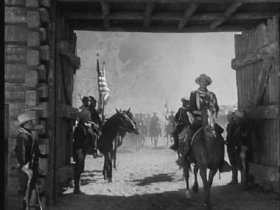

Republic/1950/105m/FS 1.33
It's Indian country in the 1870's and Lt. Colonel Kirby York is a veteran cavalry officer given the task of hunting down renegade Apaches who are using the border with Mexico as an escape route. Into this dangerous world rides young Trooper Jeff York, Kirby's son whom he hasn't seen for years. While moved by seeing his boy, York tries to balance his military ethics with the emotions he is feeling. Before you can brush the dust from a uniform, Kathleen, York's estranged wife arrives in camp to try and bring her son back from the frontier. It is inevitable that the Colonel and his lady are thrown together and discover their deep feelings of love cannot be contained. It's also inevitable that young York must prove himself as a soldier and Colonel York must prove himself human. It all happens with satisfying predictability, broken up by some surprising romantic moments and some outstanding trick horseback riding.
 |
Ford's master shots are splendid©Republic |
John Wayne is really quite marvelous as Kirby York,
the ramrod career colonel. Wayne communicates York's conflicting emotions well, struggling
with the sword up his backside and desire in his heart. I like the smaller moments in Rio
Grande when the actors are not dwarfed by the great outdoors. The quiet night scenes
which Ford infuses with music and serenades are especially lovely. Maureen O'Hara makes
her first appearance opposite Wayne as Kathleen and she is feisty and beautiful as can be.
Claude Jarman, Jr. is somewhat flat as Jeff York, but Ford regulars Victor McLaglen, Harry
Carey, Jr. and Ben Johnson more than make up for it with their
colorful antics.
Ford's compositions that rarely contain less than a two-shot
remind me how important actors are to each other. There's a lovely scene in which Wayne
and Maureen O'Hara are serenaded by soldiers of his troop. Watch Wayne's reactions. You
can see him thinking about all that went wrong with his marriage, the reticence and desire
that exist in his longing sideways glance at O'Hara. It would not work cut with a close-up
of Wayne, cut to the singers, a close-up of O'Hara, cut to a close-up of Wayne. That's how
it would be cut today, robbing the beauty and intimacy of the scene. Am I wrong here? I
fear not. Ford commands the master shot with all the polish of a pro of more than 100
films including some great silent films. The opening scene of the troops returning from
battle is elegant in its simplicity and earnestness. The later scene that recalls this
first scene is all the more powerful coupled with the remembered images of the powerful
emotional opening.
Typical of the Ford production, music is integrated into the
plot. The company quartet croons romantic idylls to the Yorks during their reunion. Played
by the Sons of the Pioneers, the echoes of the West ring out through each lyric. Victor
Young's score is lushly sentimental, integrating historical folk music themes.
Rio Grande is a gorgeous DVD transfer. Blacks have a
lustrous quality without losing detail. Contrast is outstanding with a natural range of
grays. The image is consistently sharp with no evidence of unwanted artifacts. The Dolby
Digital Mono sound is clean and pure and does justice to the lovely music. Included a part
of this special edition is Leonard Maltin's featurette "The Making of Rio
Grande." The featurette is as romantic as this Ford Western with some nice interviews
with Ford's actors and a healthy slice of scenes from the film.